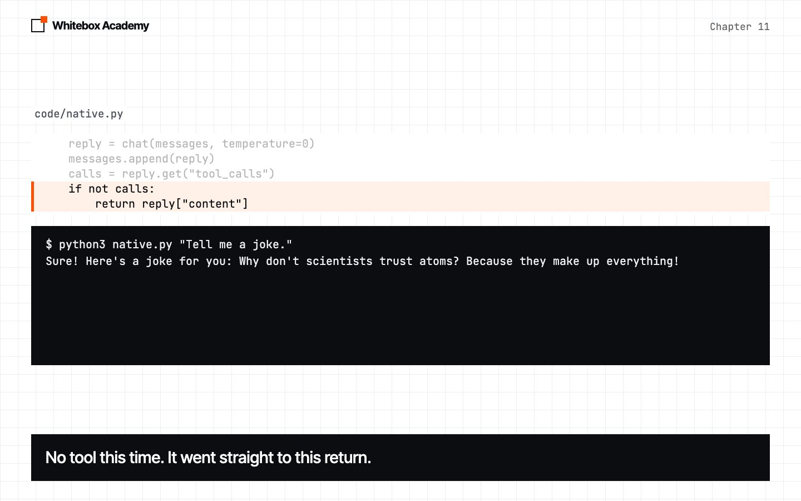
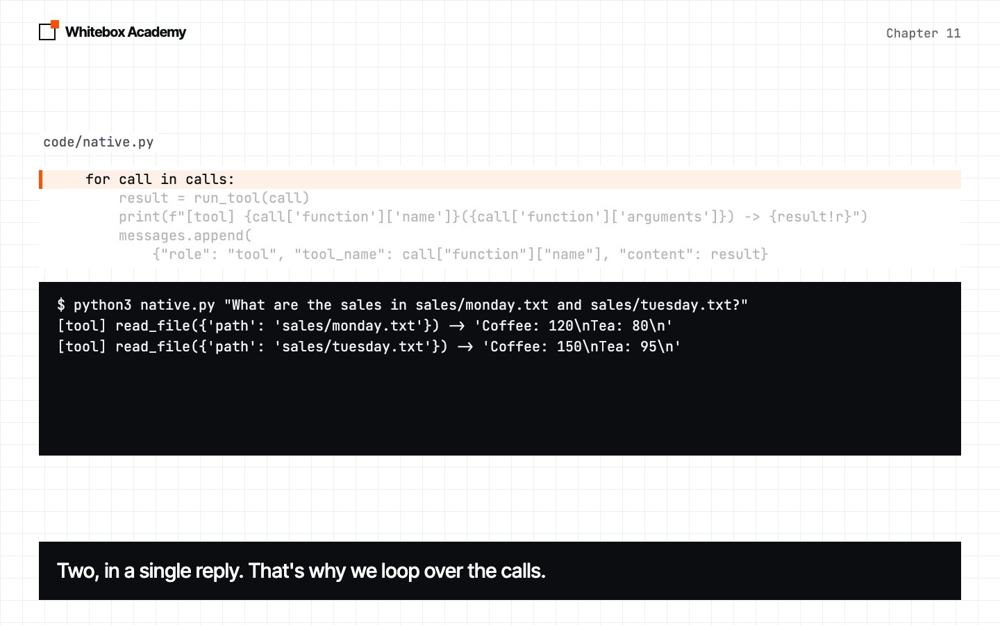
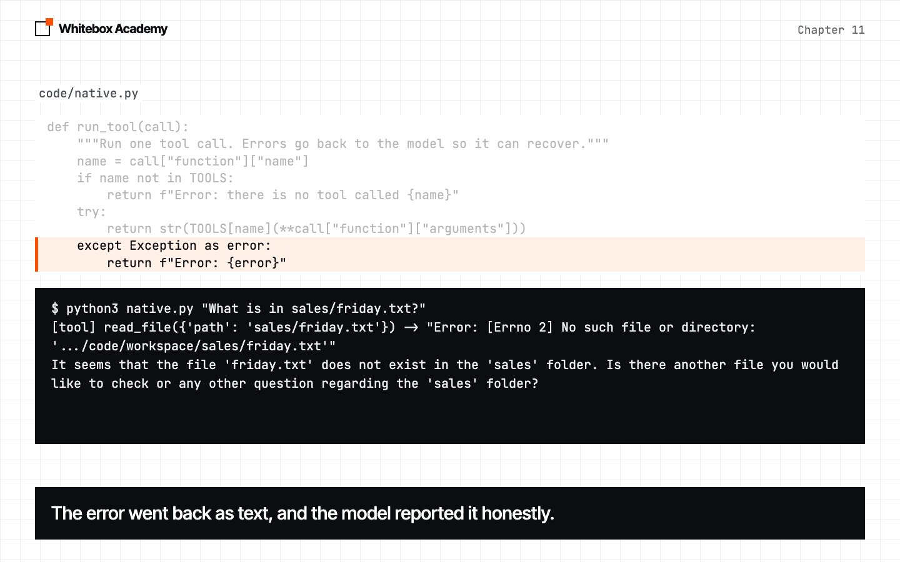
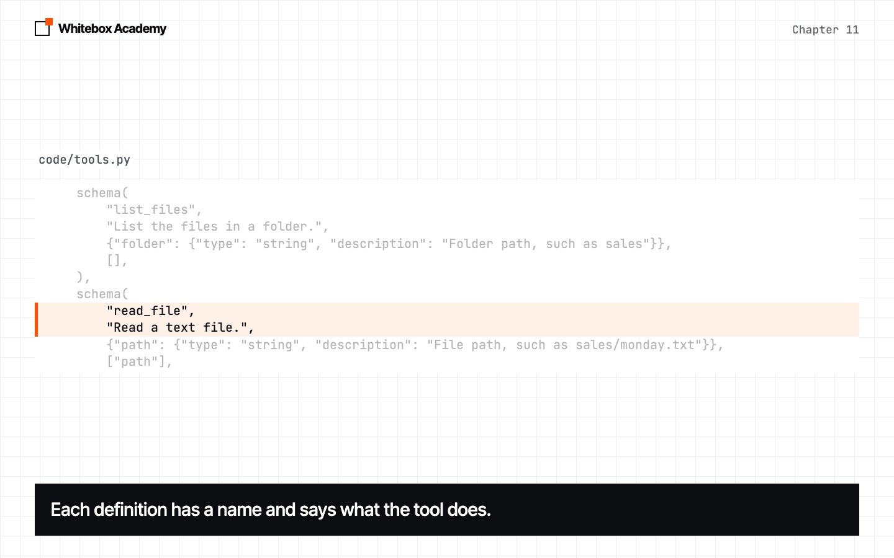
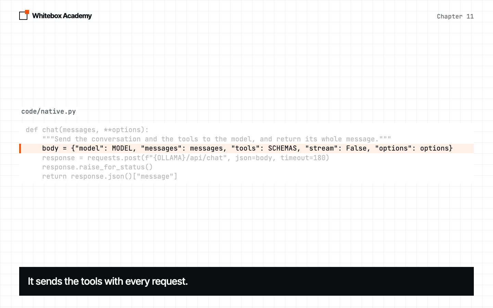
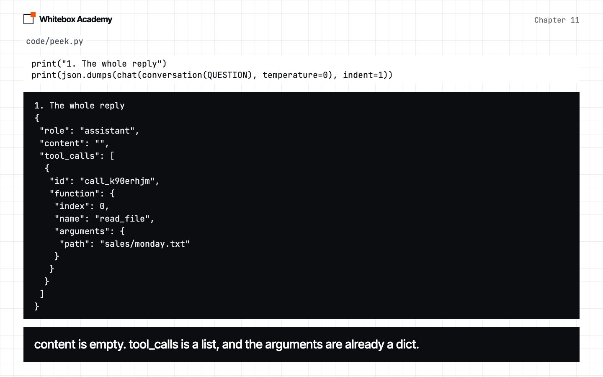
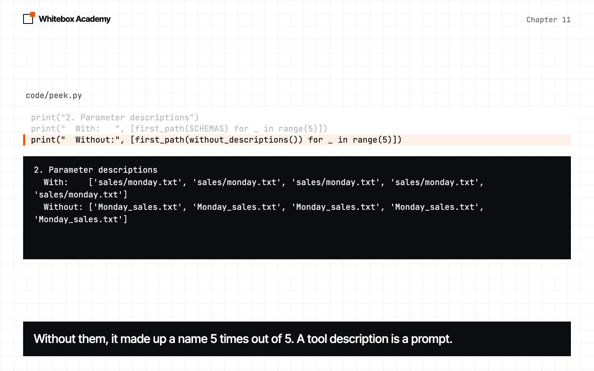
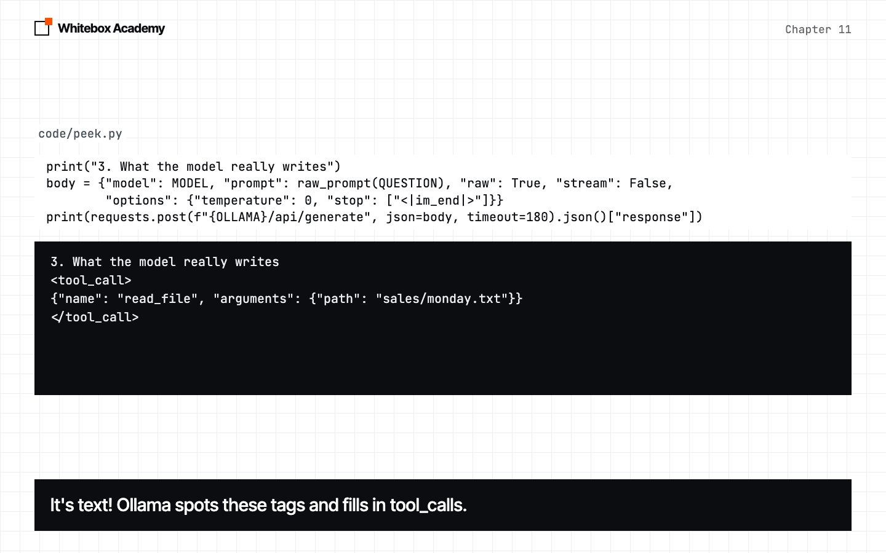

Native tool calling
See how the model API does the job you did by hand in chapter 10, and what it does better.
The same job, built in
In chapter 10, you wrote the tool list into a system prompt, forced the reply’s shape with a schema, and parsed the JSON yourself. It worked, but a joke still made the model read a file.
Model APIs have this job built in. It’s called native tool calling, and it’s the one new idea in this chapter. Your tools stay the same. Only the way you offer them to the model changes.
Start Ollama, activate the .venv from chapter 05, and run this from chapters/11-native-tool-calling/code. native.py is provided, and you haven’t seen it yet. Run it first, then we’ll open it piece by piece.
$ python3 native.py "How much coffee was sold on Monday? The file is sales/monday.txt."
[tool] read_file({'path': 'sales/monday.txt'}) -> 'Coffee: 120\nTea: 80\n'
On Monday, 120 cups of coffee were sold.
This is real output from qwen2.5:7b. Your wording may differ. It’s the same result as chapter 10, but native.py has no list of tools in its prompt, no format and no json.loads.
Three more questions
Before each one, make a prediction.
-
Tell me a joke
Predict: in chapter 10, this made the model read a file. What will happen now?
No
[tool]line appears. The by-hand version asked for a tool it didn’t need in 5 of 5 runs, and the native version in 0 of 5. Chapter 10’s schema required a tool name. Here, a tool is an option.
-
Two files
Predict: how many tools will the model ask for?
It asked for both files in one reply, in 10 of 10 runs. Chapter 10’s schema had room for only one request, and it read only Monday in 5 of 5 runs.

-
A missing file
Predict: there’s no Friday file. What will the model say?
The error went back as text, as in chapter 10, and the model reported it honestly in 10 of 10 runs. We’ve shortened the folder in this error, and you’ll see your full path.

Four small pieces
-
Describe your tools
In
tools.py, the functions andTOOLSare the same as chapter 10.SCHEMASis new. Each entry gives a tool’s name, what it does, its parameters and which ones are required. The parameters are a JSON schema, like the ones from chapter 08.
-
Send them with the conversation
Your
chatfunction has two changes."tools": SCHEMASoffers the tools, and it returns the whole message, because the tool request isn’t in the text. Try removing"tools": SCHEMAS, then ask what’s insales/monday.txt. In 5 of 5 runs, the model told us it couldn’t read files.
-
Read the reply
peek.pyis provided, and you don’t need to change it. Runpython3 peek.py. Its first part prints the whole reply.contentis empty,tool_callsis a list, andargumentsis already a dict. Youridwill differ. When the model doesn’t want a tool,tool_callsisn’t there at all, so we read it with.get.
Run the tool, then send the result back
run_tool is chapter 10’s dispatch, reading its name and arguments from the call. This is the whole round trip:
reply = chat(messages, temperature=0)
messages.append(reply)
calls = reply.get("tool_calls")
if not calls:
return reply["content"]
for call in calls:
result = run_tool(call)
print(f"[tool] {call['function']['name']}({call['function']['arguments']}) -> {result!r}")
messages.append(
{"role": "tool", "tool_name": call["function"]["name"], "content": result}
)
reply = chat(messages, temperature=0)
- Ask the model, and add its reply to the conversation.
- If it didn’t ask for a tool, its text is the answer.
- Run each tool, and add each result as a message with the role
tool. - Ask again, so the model can use the results.
The role tool is new. In chapter 10, you pretended the result was a user message. Now the conversation says what really happened.
By hand versus native
| The job | By hand (by_hand.py) | Native (native.py) |
|---|---|---|
| Tell the model the tools | Written into SYSTEM | "tools": SCHEMAS |
| Get a request you can read | format=REQUEST | reply.get("tool_calls") |
| Read the arguments | json.loads(reply) | Already a dict |
| Run the tool | dispatch(name, arguments) | run_tool(call) |
| Send the result back | A user message | A tool message |
| No tool needed | It must pick one anyway | It just answers |
| Two tools at once | Only one fits | tool_calls is a list |
It’s still text
-
Descriptions are prompts
Predict: “Read the Monday sales file.” gives no path. How will the model find one?
The only change is removing descriptions like
File path, such as sales/monday.txt. With them, the model chose the right path in 5 of 5 runs. Without them, it made up a name in 5 of 5. A tool definition is a prompt, and a well-formed call can still be wrong.
-
What the model really writes
A model can only produce text, so how does it make a tool call? The third part of
peek.pyskips the chat API and sends the raw text, as you did in chapter 07. The model writes its request as text, inside<tool_call>tags.
Each model has a template, and qwen2.5:7b’s template pastes your tools into the system prompt, with instructions on how to ask for one. You can read it with ollama show qwen2.5:7b --template. Ollama then spots the tags in the reply and moves the JSON into tool_calls.
So native tool calling is what you built in chapter 10: tools described in a prompt, and a request written as text that gets parsed. Other models use other wording, and this model was trained on its format. The API just does that work for you.
One round trip isn’t enough
Now try the question from chapter 09. Predict: it needs a folder listing, three files and some addition. What will native.py do?
$ python3 native.py "What was the total coffee revenue across all the days in the sales folder?"
[tool] list_files({'folder': 'sales'}) -> 'monday.txt\ntuesday.txt\nwednesday.txt'
Stopped: the model still wants read_file({'path': 'sales/monday.txt'})
It stopped the same way in 10 of 10 runs. The model did the right thing: it listed the folder, then asked to read the first file. It can’t ask for a file until it knows the file’s name, so this needs another step. Our code does one round trip, then it’s finished.
Exercises
Open exercises.py and complete the five TODOs:
multiply_schema: write a tool definition.requested_calls: read the tool calls from a reply.run_tool: run a call, and return errors as text.tool_message: build the message that carries a result.round_trip: put it together.
Then run python3 -m pytest test_exercises.py. These checks use a fake model, so Ollama doesn’t need to be running. You’ve finished when you see 5 passed.
Common mistakes
- Reading
contentwhen the model asked for a tool. It’s empty, so checktool_callsfirst. - Handling only the first tool call.
tool_callsis a list, so run them all. - Skipping the reply when you add to
messages. In our test, the model still answered correctly in 5 of 5 runs, but the conversation no longer shows what it asked for. Keep the record complete. - Writing vague descriptions. The model only knows what your definitions tell it.
- Trusting a well-formed call.
Monday_sales.txtwas a valid request for a file that doesn’t exist.
What you opened
- You offer tools with
tools=, using JSON schemas. - The model asks for them in
tool_calls, which is a list. - You run them, and send each result back with the role
tool. - The model can choose not to use a tool.
- Tool descriptions are prompts.
- Underneath, a tool call is still text.
To learn more, read OpenAI’s 2023 function calling announcement and Ollama’s tool support post.